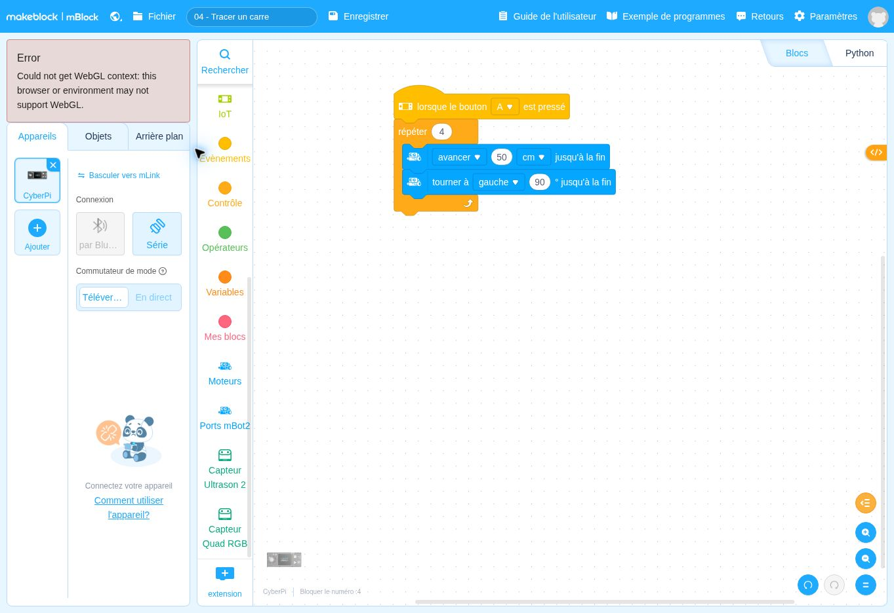

Répéter une séquence pour parcourir un carré
Pourquoi quatre répétitions ferment-elles ce parcours ?
Fehmi KLABI · Professeur de technologie · Formateur · Conseiller pédagogique
Ce que vous cherchez à comprendre
Vous connaissez maintenant une avance et une rotation. Vous les associez pour construire un parcours. Le carré permet de rendre visible la différence entre une instruction et une séquence répétée.
Apprentissage principal : Comprendre une boucle de répétition et l’ordre des actions à l’intérieur.
Prérequis et matériel : Avoir essayé les projets 02 et 03. Prévoir une zone dégagée pour des côtés de 50 cm.
Lire le comportement avant les blocs
Les lignes suivent l’ordre du programme. Une ligne en retrait appartient au choix ou à la boucle qui la précède. Cet algorithme décrit le fichier fourni ; il ne constitue pas la preuve d’un fonctionnement sur votre robot.
QUAND LE BOUTON A EST PRESSÉ
RÉPÉTER 4 FOIS
Avancer de 50 centimètres et attendre la fin du déplacement.
Tourner à gauche de 90 degrés et attendre la fin de la rotation.
FIN DE LA RÉPÉTITION
FIN DU PROGRAMMERelier chaque groupe de blocs à l’algorithme

| Ce que vous repérez dans la capture | Ce que cela signifie |
|---|---|
| Le bloc orange « répéter 4 » | Il contient les deux actions qui seront exécutées quatre fois. |
| Le bloc avancer placé en premier | Chaque répétition commence par un côté de 50 cm. |
| Le bloc tourner placé ensuite | Chaque côté est suivi d’un changement d’orientation de 90°. |
Vérifier un résultat, puis l’expliquer
- Prédisez la position finale avant de faire rouler le robot.
- Lancez le parcours. Comparez le point d’arrivée et l’orientation avec ceux du départ.
- Réduisez la longueur des côtés si l’espace disponible est insuffisant. Gardez quatre répétitions et 90°.
Si le résultat diffère de votre prévision
Si le parcours ne se ferme pas, distinguez une erreur de structure (blocs hors de la boucle) d’une accumulation d’erreurs physiques. Vérifiez aussi le nombre de répétitions.
Préparer une séance de technologie
Pour vos élèves, un parcours obtenu ne prouve pas la compréhension de la boucle. Demandez ce qui change si le nombre de répétitions devient trois, sans modifier l’angle. La prédiction révèle ce qui est compris.
Ce que vous pouvez fournir et laisser chercher
Fournissez les deux commandes de mouvement. Laissez à construire leur organisation dans la boucle.
La trace de compréhension à demander
Un algorithme en français et une justification du nombre de répétitions.